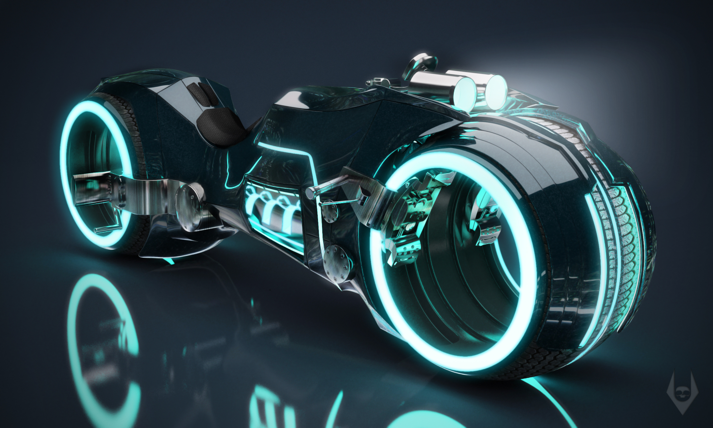

Bem vindo ao mundo das motos. Aqui sua moto tem tratamento diferenciado. Profissionais especializados em várias marcas e modelos, treinamento específico para cada tipo de serviço.
Aqui não trabalhamos sobre dúvidas. Temos certeza em tudo o que fazemos. Cuidar da sua moto é a nossa paixão e fazê-la funcionar perfeitamente é o nosso dever.
Criada em 2018 por Henrique Nagy, a Nagy's Motorcycle tem como carro chefe a realização de serviços de rotina da moto: troca de óleo e filtro de óleo, ajuste de correia, calibragem de pneus e troca de peças.
Porém, Sr. Henrique Nagy não limitou somente à realização de serviços. Apaixonado por motos, resolveu ir além. Aprendeu sobre como customizar motos, melhorar a performance dos motores, e criar sua própria marca de motos: TRONCYCLES.
TRONCYCLES eh um novo conceito de moto. Totalmete revolucionária, conta com varias mudanças radicais que vão desde o motor da moto, o combustível e a inclusão de um pneu traseiro e dianteiro a mais. Isto resulta numa maior performance da moto, podendo atingir maiores velocidades em um curto espaço de tempo, melhora a tração, o consumo de combustível se torna muito menor, para fazer curvas acentuadas a moto fica mais fixa ao solo, dificultando as quedas, e várias outras mudancas. Já o visual da moto é incontestável, pois seu modelo foi desenhado por renomados construtores do mundo automotivo, encorporando modelos clássicos com atuais.
Veja abaixo todos os servicos que voce encontrará em nossa oficina mecânica:
E muito mais !.